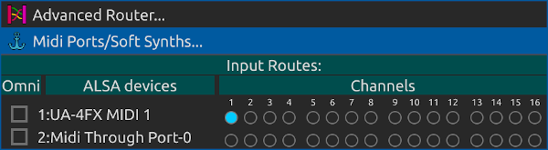

Routes
Routes are how tracks are connected together and to the outside world. (They are also how Jack midi ports connect to the outside world. See midi port configuration). Each track strip has two buttons whose icons look like arrows. One button is for input routing and the other is for output routing. Clicking on these buttons will pop up a menu of available input or output routes that you can connect to. Most audio tracks list other tracks to connect to, but audio input and output tracks are special: Audio input track input routing menus list available Jack audio input ports. Conversely audio output track output routing menus list available Jack audio output ports.

Meanwhile MIDI and drum tracks allow you to route available MIDI ports and channels to the track using a handy popup matrix.

Anti circular routing
Any routing menu item which would cause a circular routing condition is grayed out. Find out why the condition would exist by examining routing paths involved and correct the situation if required.
Also, you cannot use a track’s aux sends if the track has an input route path from ANY Aux Track. (See aux tracks). Aux send knobs and labels are disabled in that case.
Soloing chain routes
Soloing chains (see solo chains) are really just routes like any other. The available solo chaining paths are displayed in the routing popup menus.